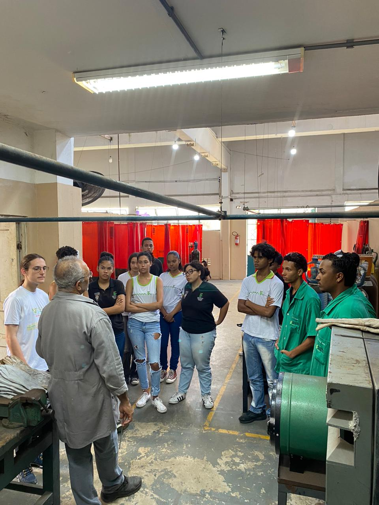
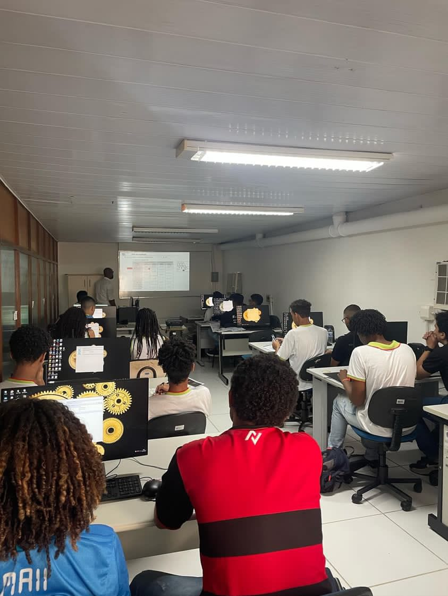
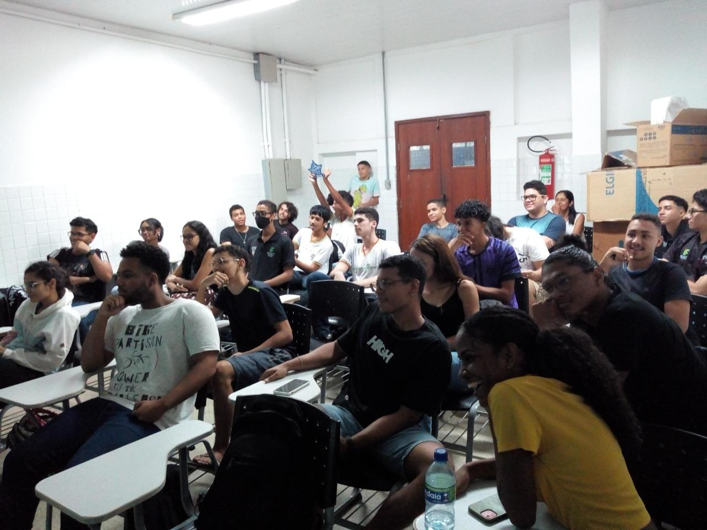
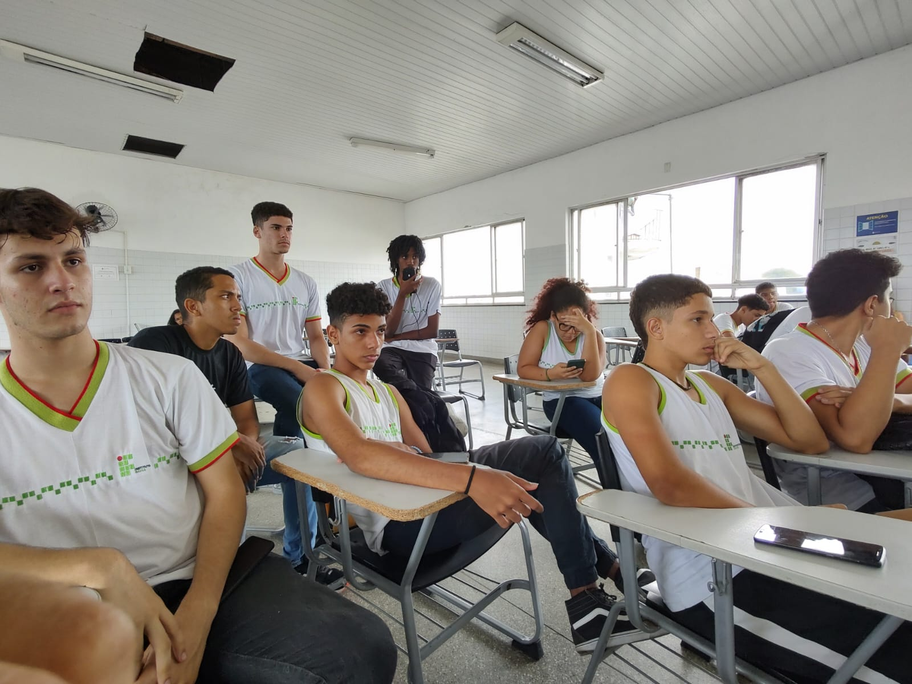
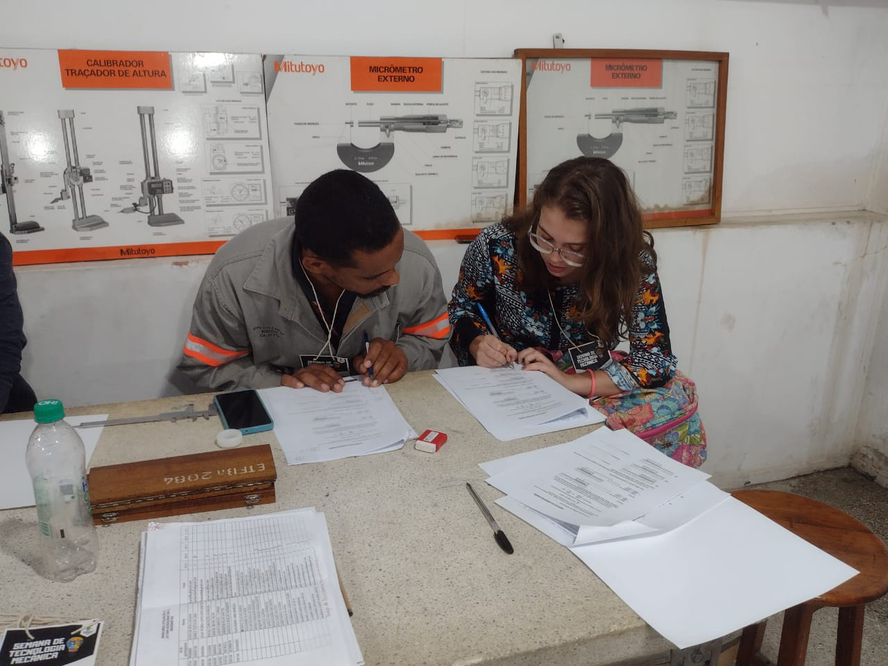
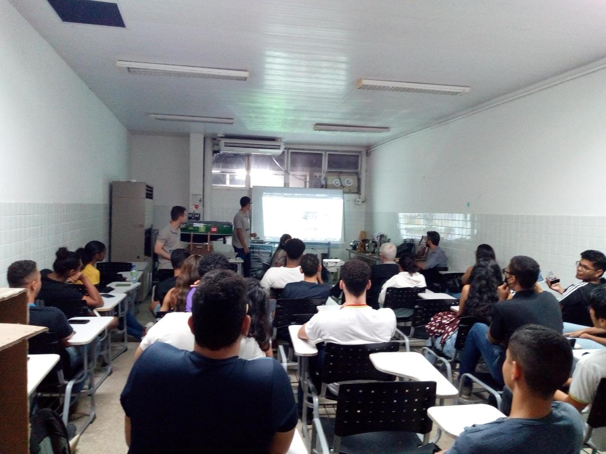
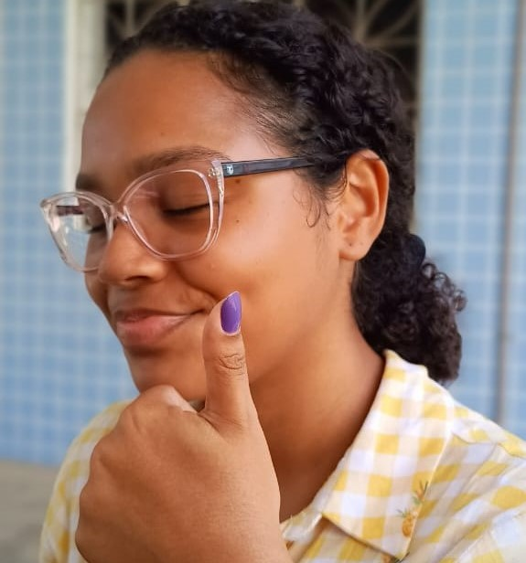
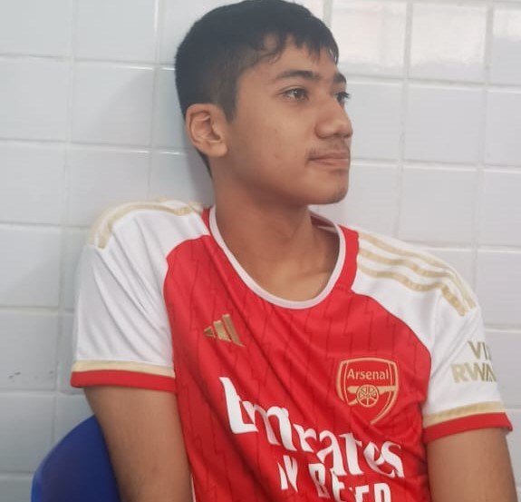

Integração de Conhecimento Técnico e Téorico
Para ressaltar a conexão entre aulas práticas, teóricas e atividades colaborativas.

Minicurso

Minicurso

Bem-vindo(a) à Semana da Tecnologia Mecânica! Um evento que conecta estudantes, profissionais e entusiastas em torno das inovações e desafios da área mecânica. Explore novas tecnologias, troque experiências e amplie seus horizontes no universo da engenharia e da indústria.
Saiba mais sobre a programação e participe dos nossos eventos imperdíveis!Na Semana da Tecnologia Mecânica, oferecemos uma programação variada e enriquecedora para todos os participantes. Cada tipo de evento é pensado para promover aprendizado, troca de experiências e desenvolvimento profissional, garantindo uma experiência completa e dinâmica.
Os minicursos são oportunidades de aprendizado prático e direto, onde os participantes podem adquirir novas habilidades ou aprofundar conhecimentos específicos. Ministrados por especialistas, esses cursos têm carga horária reduzida, mas com conteúdos relevantes e aplicáveis ao mercado de trabalho.
As palestras são momentos de inspiração e conhecimento, conduzidas por profissionais renomados e especialistas em suas áreas. Elas abordam tendências, desafios e inovações, proporcionando uma visão abrangente e atualizada sobre temas de interesse.
Os workshops são experiências interativas e colaborativas, focadas em resolver problemas práticos ou explorar temas técnicos. Com dinâmicas voltadas à prática, os participantes têm a chance de aprender fazendo, em um ambiente que estimula a criatividade e o trabalho em equipe.
As mesas-redondas promovem discussões ricas e diversificadas sobre temas relevantes e atuais. Reunindo especialistas e o público, esse formato incentiva o diálogo, a troca de ideias e a ampliação de perspectivas sobre os desafios e as oportunidades do setor.
Para ressaltar a conexão entre aulas práticas, teóricas e atividades colaborativas.


Na Semana da Tecnologia Mecânica, nosso compromisso é oferecer iniciativas que promovam a aprendizagem, a inclusão e o engajamento de todos os envolvidos. Confira os pilares que norteiam nossas ações:

Além do contato direto com profissionais da área da Mecânica e afins, os discentes têm a oportunidade de adentrar ainda mais no universo técnico, podendo somar ao seu currículo cursos e qualificações para o mercado de trabalho.

Os voluntários são discentes do Instituto que se puseram a disposição da organização do evento. Estes, no decorrer do processo, vão adquirindo valores morais e habilidades bastante significativas para se estar inserido no âmbito profissional/social.

Tendo em vista os estudantes que ingressam no Instituto sem ter uma noção completa do que consiste o curso mas, assim como qualquer individuo do público interno ou externo, deseja conhecer mais a respeito de suas especificidades na área técnica.

Sobretudo, nesta edição, tendo em vista a sua realização online e a total intenção do evento em atender da maneira mais eficaz os participantes com necessidades especiais, os quais, em grande parte, já integram o público interno do Instituto.
A Semana da Tecnologia Mecânica é mais do que um evento – é uma oportunidade de transformar aprendizado em prática, construir conexões valiosas e inspirar inovações. Confira o que participantes e especialistas têm a dizer sobre suas experiências conosco.

"Participar da Semana da Tecnologia Mecânica foi uma experiência enriquecedora. Tive a oportunidade de compartilhar conhecimento com estudantes motivados e profissionais comprometidos, em um ambiente colaborativo e inspirador."

"Este evento é uma ponte entre a academia e a indústria. A qualidade das palestras, workshops e discussões é excelente, e o impacto na formação dos estudantes é evidente. Um espaço indispensável para o aprendizado técnico."